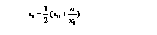

迭代法也称辗转法，是一种不断用变量的旧值推出新值的过程。它是解决问题的一种基本方法，通过让计算机对一组指令（或一定步骤）进行重复执行，在每次执行这组指令（或这些步骤）时，都从变量的原值推出它的一个新值。
迭代算法的基本思想是：为求一个问题的解x，可由给定的一个初值x0，根据某一迭代公式得到一个新的值x1，这个新值x1比初值x0更接近要求的值x；再以新值作为初值，即：x1→x0，重新按原来的方法求x1，重复这一过程直到|x1-x0|<ε(某一给定的精度)。此时可将x1作为问题的解x。
利用迭代算法解决问题，需要做好以下三个方面的工作：
（1）确定迭代变量。在可以用迭代算法解决的问题中，至少存在一个直接或间接地不断由旧值推出新值的变量，这个变量就是迭代变量。
（2）建立迭代关系式。所谓迭代关系式，指如何从变量的前一个值推出其下一个值的公式（或关系）。迭代关系式的建立是解决迭代问题的关键。
（3）对迭代过程进行控制。在什么时候结束迭代过程？这是编写迭代程序必须考虑的问题。不能让迭代过程无休止地重复执行下去。迭代过程的控制通常可分为两种情况：一种是所需的迭代次数是个确定的值，可以计算出来；另一种是所需的迭代次数无法确定。对于前一种情况，可以构建一个固定次数的循环来实现对迭代过程的控制；对于后一种情况，需要进一步分析出用来结束迭代过程的条件。
迭代也是用循环结构实现，只不过要重复的操作是不断从一个变量的旧值出发计算它的新值。其基本格式描述如下：
迭代变量赋初值；
while (迭代终止条件)
{
根据迭代表达式，由旧值计算出新值；
新值取代旧值，为下一次迭代做准备；
}
【例1】验证谷角猜想
日本数学家谷角静夫在研究自然数时发现了一个奇怪现象：对于任意一个自然数 n ，若 n 为偶数，则将其除以 2 ；若 n 为奇数，则将其乘以 3 ，然后再加 1 。如此经过有限次运算后，总可以得到自然数 1 。人们把谷角静夫的这一发现叫做“谷角猜想”。
要求：编写一个程序，由键盘输入一个自然数 n ，把 n 经过有限次运算后，最终变成自然数 1 的全过程打印出来。
（1）编程思路
定义迭代变量为n，按照谷角猜想的内容，可以得到两种情况下的迭代关系式：当 n 为偶数时，n=n/2 ；当 n 为奇数时， n=n*3+1 。
这就是需要计算机重复执行的迭代过程。这个迭代过程需要重复执行多少次，才能使迭代变量 n 最终变成自然数 1 ，这是我们无法计算出来的。因此，还需进一步确定用来结束迭代过程的条件。由于对任意给定的一个自然数 n ，只要经过有限次运算后，能够得到自然数 1 ，从而完成验证工作。因此，用来结束迭代过程的条件可以定义为： n==1 。
（2）源程序
#include <iostream>
using namespace std;
int main()
{
unsigned int data;
cout<<"请输入一个自然数：";
cin>>data;
while(data!=1)
{
if((data%2==0))
{
cout<<data<<"/2=";
data/=2;
cout<<data<<endl;
}
else
{
cout<<data<<"*3+1=";
data=data*3+1;
cout<<data<<endl;
}
}
return 0;
}
【例2】求平方根
用迭代法求某个数的平方根。已知求平方根的迭代公式为：

（1）编程思路
用迭代法求某个数a的平方根的算法为：
（1）先自定一个初值x0，作为a的平方根值，例如，取a/2作为x0的初值。利用迭代公式求出一个x1。此值与真正的a的平方根值相比，误差可能很大。
（2）把新求得的x1代入x0中，准备用此新的x0再去求出一个新的x1。
（3）利用迭代公式再求出一个新的x1的值，也就是用新的x0又求出一个新的平方根值x1，此值将更趋近于真正的平方根值。
（4）比较前后两次求得的平方根值x0和x1，如果它们的差值小于指定的值（如0.000001），即达到要求的精度，则认为x1就是a的平方根值，执行步骤5；否则执行步骤2，即循环进行迭代。
（5）迭代结束，输出结果x1。
（2） 源程序
#include <iostream>
#include <cmath>
using namespace std;
int main()
{
double x0,x1,a ;
cin>>a;
x0 =a/2; // 迭代初值
x1 =0.5*(x0 + a/x0);
do
{
x0 = x1; // 为下一次迭代作准备
x1 = 0.5*(x0 + a/x0);
} while (fabs(x1-x0)>0.000001);
cout<<x1<<endl; // 输出结果
return 0 ;
}